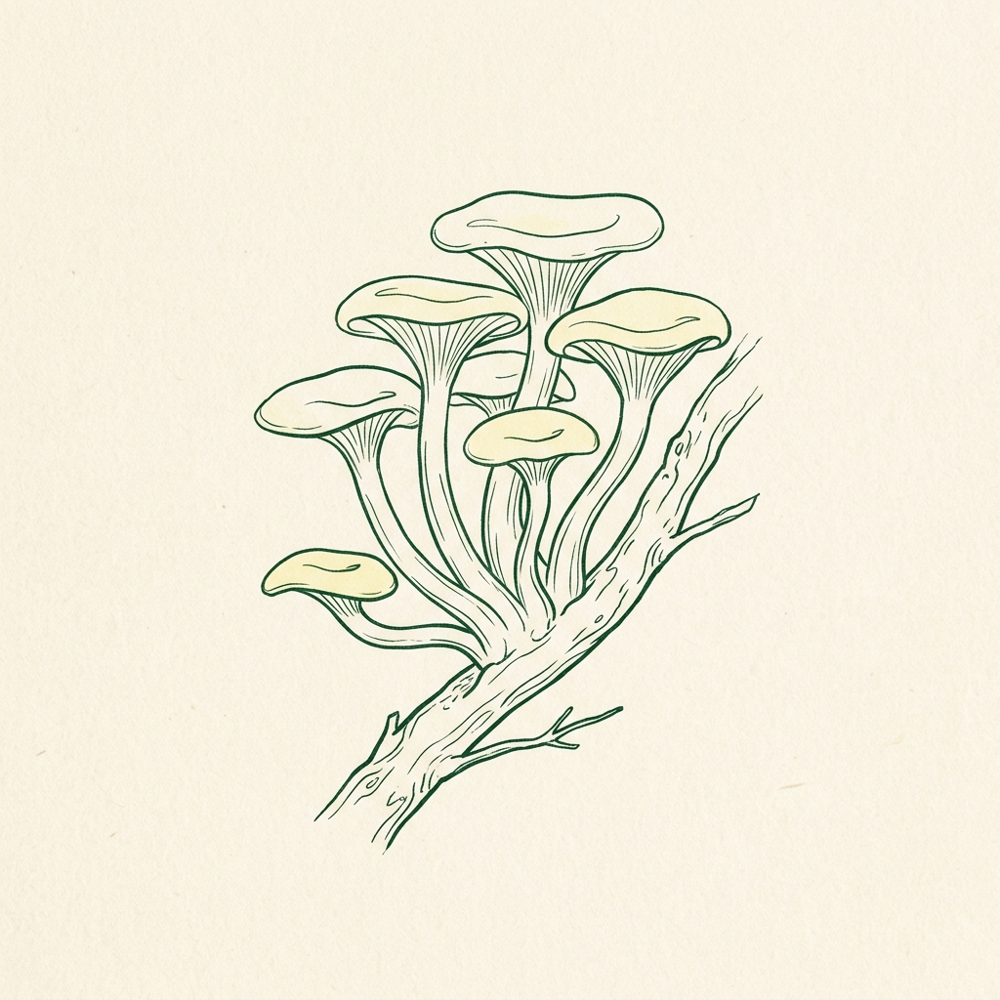

Cultivation
Golden Oyster Mushroom Grow Kit
Prolific, warm-weather fruiter producing stunning clusters of golden-yellow mushrooms with a delicate nutty flavor.
- Produces stunning, vibrant yellow Pleurotus citrinopileatus clusters
- Vigorous and fast-fruiting warm-weather strain
- Delicate, nutty, and slightly sweet flavor profile
- Great for beginners and classrooms
🔬 Scientific Clinical Backing
Golden Oyster (Pleurotus citrinopileatus) is an edible mushroom native to eastern Asia. It contains high levels of antioxidants, including ergothioneine, which protects cells from oxidative stress. It is a thermophilic species, meaning it fruits most successfully in slightly warmer ambient temperatures.
Nutritional Science: Journal of Agricultural and Food Chemistry (2020). 'Antioxidant and ergothioneine profiles of Pleurotus citrinopileatus.'
📦 Dosage & Application
Cut a 2-inch horizontal slit on the side. Spray with water 2-3 times daily. Works best in warmer areas (70-80°F). Harvest when the golden caps begin to concave slightly upwards.
FDA & FTC Affiliate Disclosure: SporlyWorks earns an affiliate commission on qualifying purchases made through partner links at no extra cost to you. Certified organic pre-colonized block for culinary home cultivation.